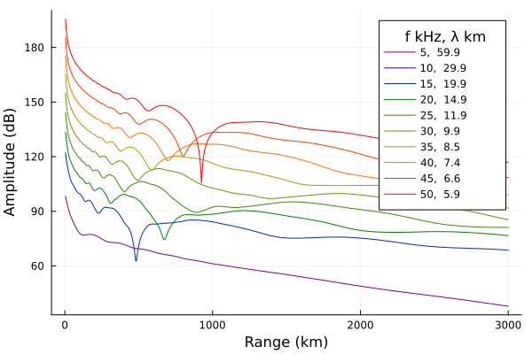
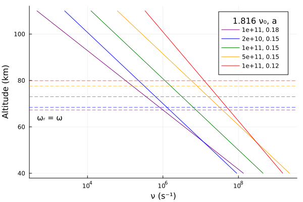
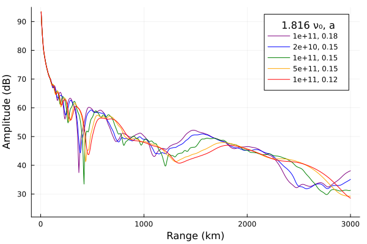

Interpreting h′ and β
This example looks at the influence of h′, β, electron collision frequency, and transmitter frequency on amplitude curves.
Background
Wait and Spies (1964) is a technical report which characterizes the influence of Earth-ionosphere waveguide parameters on the propagation of VLF radio waves (the attenuation rates, phase velocities, etc.). The report is probably most cited[1] as the source of the exponential electron density profile parameterized by a height h′ (km) and slope β (km⁻¹). The profile is usually written as:
\[N(z) = 1.43\times 10^{13} \exp(-0.15 h') \exp((\beta - 0.15)(z - h'))\]
for density $N$ (m⁻³) and altitude $z$ (km), but as described in Morfitt (1977) or Thomson (1993), Wait and Spies (1964) does not explicitly introduce this form. Instead, Wait introduces a "conductivity parameter" $\omega_r$ defined by
\[\omega_r = \omega_p^2/\nu\]
where $\omega_p$ is the angular plasma frequency of the electrons and $\nu$ is the effective collision frequency. The height at which $\omega_r = \omega$, the angular radio wave frequency is approximately the wave reflection height. This statement is equivalent to $X = Z$ from magnetoionic theory (Ratcliffe (1959)).
Citing laboratory and some observational experiments, Wait assumes an analytical collision frequency profile
\[\nu = 5 \times 10^6 \exp(-0.15(z - 70)).\]
Using daytime measurements made by the method of partial reflection, he calculates the approximation
\[\omega_r = (2.5\times 10^5)\exp(0.3(z - 70)).\]
To fit measurements made at other times and locations, he parameterizes the function as
\[\omega_r = (2.5 \times 10^5)\exp(\beta(z - h'))\]
where "$\beta$ is a constant and $h'$ is a reference height" (the height at which $\omega_r = 2.5\times 10^5$). He immediately suggests $\beta = 0.3$ at day and $\beta = 0.5$ at night, which are largely considered typical values today. Wait also parameterizes the collision frequency profile as
\[\nu(z) = \nu_0\exp(-az).\]
Wait fixed $a=0.15$ for his studies in the report.
Morfitt and Shellman (1976) cites Wait and Spies and uses
\[\nu(z) = 1.82\times 10^{11} \exp(-0.15 z)\]
from this, it is simple to derive the equation attributed to Wait and Spies (1964). The $(\beta - 0.15)$ term comes from the assumption $N(z) = N_0\exp(bz)$ and $\nu(z) = \nu_0\exp(-az)$ where $\beta = a + b$ and $a = 0.15$.
using Printf, Plots, Interpolations
using LongwaveModePropagator
const LMP = LongwaveModePropagator
# Constant values
const BFIELD = BField(50e-6, π/2, 0)
const GND = GROUND[5]
const TX = Transmitter(20e3)
const RX = GroundSampler(0:5e3:3000e3, Fields.Ez)Varying h′
In this section we set the frequency to 20 kHz, β is set to 0.4 km⁻¹ and we vary h′.
function varyhp(hprimes)
amps = Vector{Vector{Float64}}(undef, length(hprimes))
for i in eachindex(hprimes)
electrons = Species(LMP.QE, LMP.ME, z->waitprofile(z, hprimes[i], 0.4), electroncollisionfrequency)
waveguide = HomogeneousWaveguide(BFIELD, electrons, GND)
E, a, p = propagate(waveguide, TX, RX)
amps[i] = a
end
return amps
end
hprimes = 72:1:78
amps = varyhp(hprimes)
p = plot();
function buildplots!(p, amps)
cmap = palette(:amp, length(hprimes)+1) # +1 allows us to use a darker lightest color
for i in eachindex(hprimes)
plot!(p, RX.distance/1000, amps[i];
label=hprimes[i], color=cmap[i+1]);
end
end
buildplots!(p, amps);
plot!(p; size=(600,400), ylims=(22, 95),
xlabel="Range (km)", ylabel="Amplitude (dB)", legendtitle="h′")
As h′ increases, the field strength modal interference pattern is displaced outwardly away from the transmitter.
Varying β
Now we'll fix h′ at 78 km and vary β.
function varybeta(betas)
amps = Vector{Vector{Float64}}(undef, length(betas))
for i in eachindex(betas)
electrons = Species(LMP.QE, LMP.ME, z->waitprofile(z, 78, betas[i]), electroncollisionfrequency)
waveguide = HomogeneousWaveguide(BFIELD, electrons, GND)
E, a, p = propagate(waveguide, TX, RX)
amps[i] = a
end
return amps
end
betas = [0.3, 0.4, 0.5, 0.7, 0.9, 2.0]
amps = varybeta(betas)
p = plot();
function buildplots!(p, amps)
cmap = palette(:amp, length(betas)+1)
for i in eachindex(betas)
plot!(p, RX.distance/1000, amps[i];
label=betas[i], color=cmap[i+1]);
end
end
buildplots!(p, amps);
plot!(p; size=(600,400), ylims=(22, 95),
xlabel="Range (km)", ylabel="Amplitude (dB)", legendtitle="β")The signal roughly increases with increasing β. Higher β profiles more closely represent a sharp reflecting boundary.
It may be more accurate to say that higher β ionospheres lead to more extreme amplitudes - higher highs and lower lows. Morfitt (1977) describes this as an increase in β leads to the signal levels varying over a wider range in the regions of strong modal interference.
Varying frequency
In this section we'll look at an ionosphere described with typical daytime Wait profile parameters, but we'll vary the radio frequency from 5 kHz to 50 kHz.
function varyfreq(freqs)
electrons = Species(LMP.QE, LMP.ME, z->waitprofile(z, 75, 0.35), electroncollisionfrequency)
waveguide = HomogeneousWaveguide(BFIELD, electrons, GND)
amps = Vector{Vector{Float64}}(undef, length(freqs))
for i in eachindex(freqs)
tx = Transmitter(freqs[i])
E, a, p = propagate(waveguide, tx, RX)
amps[i] = a
end
return amps
end
freqs = 5e3:5e3:50e3
amps = varyfreq(freqs)
p = plot();
function buildplots!(p, amps)
pal = palette(:rainbow, 7)
cmap = [pal[1]; range(pal[2], pal[3]; length=2); range(pal[4], pal[5]; length=4);
range(pal[6], pal[7]; length=3)]
for i in eachindex(freqs)
fkHz = trunc(Int, freqs[i]/1000)
λkm = trunc(LMP.C0/freqs[i]/1000; digits=1)
plot!(p, RX.distance/1000, amps[i] .+ (10*i);
label=string(fkHz, ", ", λkm), color=cmap[i]);
end
end
buildplots!(p, amps);
plot!(p; size=(600,400),
xlabel="Range (km)", ylabel="Amplitude (dB)", legendtitle="f kHz, λ km")
The effect of increasing frequency is similar to increasing h′. This makes sense because in both cases the waveguide "height" in wavelengths is increassing.
Collision frequency
So far all of the profiles generated above have used the electron collision frequency from Morfitt and Shellman (1976). Let's look at the effect of different collision frequency profiles.
First we'll plot the collision frequency profiles themselves. On the plots we'll also mark the approximate reflection height for TX.frequency where $\omega_r = \omega$ for a typical daytime electron density profile.
collisionfrequency(z, ν₀, a) = ν₀*exp(-a*z/1000) # 1/1000 converts `z` to km
function reflectionheight(params, hp, β)
species = Species(LMP.QE, LMP.ME,
z->waitprofile(z, hp, β), z->collisionfrequency(z, params...))
ωr = LMP.waitsparameter.(alt, (TX.frequency,), (BFIELD,), (species,))
itp = linear_interpolation(ωr, alt)
eqz = itp(TX.frequency.ω)
return eqz
end
alt = 40e3:500:110e3
params = [(1.816e11, 0.18),
(1.816e11/5, 0.15), (1.816e11, 0.15), (1.816e11*5, 0.15),
(1.816e11, 0.12)]
p = plot();
function buildplots!(p, params, hp, β)
cmap = palette(:rainbow, length(params))
for i in eachindex(params)
eqz = reflectionheight(params[i], hp, β)
v₀label = params[i][1]/1.816
plot!(p, collisionfrequency.(alt, params[i]...), alt/1000;
label=@sprintf("%.0e, %.2f", v₀label, params[i][2]), color=cmap[i]);
hline!(p, [eqz/1000]; linestyle=:dash, color=cmap[i], linewidth=0.6, label=nothing)
end
end
buildplots!(p, params, 75, 0.35);
annotate!(p, [(1e3, 64, text("ωᵣ = ω", 10))])
plot!(p; size=(600,400), xscale=:log10,
xlabel="ν (s⁻¹)", ylabel="Altitude (km)", legendtitle="1.816 ν₀, a")
Typical daytime electron density profile.
function varycollisionfreq(params, hp, β)
amps = Vector{Vector{Float64}}(undef, length(params))
for i in eachindex(params)
electrons = Species(LMP.QE, LMP.ME,
z->waitprofile(z, hp, β), z->collisionfrequency(z, params[i]...))
waveguide = HomogeneousWaveguide(BFIELD, electrons, GND)
E, a, p = propagate(waveguide, TX, RX)
amps[i] = a
end
return amps
end
amps = varycollisionfreq(params, 75, 0.35)
p = plot();
function buildplots!(p, amps)
cmap = palette(:rainbow, length(params))
for i in eachindex(params)
v₀label = params[i][1]/1.816
plot!(p, RX.distance/1000, amps[i];
label=@sprintf("%.0e, %.2f", v₀label, params[i][2]), color=cmap[i]);
end
end
buildplots!(p, amps);
plot!(p; size=(600,400), ylims=(22, 95),
xlabel="Range (km)", ylabel="Amplitude (dB)", legendtitle="1.816 ν₀, a")Typical nighttime electron density profile.
amps = varycollisionfreq(params, 82, 0.55)
p = plot();
function buildplots!(p, amps)
cmap = palette(:rainbow, length(params))
for i in eachindex(params)
v₀label = params[i][1]/1.816
plot!(p, RX.distance/1000, amps[i];
label=@sprintf("%.0e, %.2f", v₀label, params[i][2]), color=cmap[i]);
end
end
buildplots!(p, amps);
plot!(p; size=(600,400), ylims=(22, 95),
xlabel="Range (km)", ylabel="Amplitude (dB)", legendtitle="1.816 ν₀, a")
This page was generated using Literate.jl.
- 1As a government technical report and not a journal paper curated by a publishing company, it is difficult to track how many times it has been cited by others.